A leaf spring is a well-designed combination of metal strips that are aligned and installed in wheeled vehicles for the purpose of abeyance. It is one of the oldest tools used for suspension in motor vehicles and is available in several forms depending on the type of vehicle and the amount of deferment required. They are commonly used in heavy vehicles such as trucks and cars. The advantage of leaf spring is that it spreads the load uniformly over the vehicle chassis, whereas coil springs transfer it to only a single point. 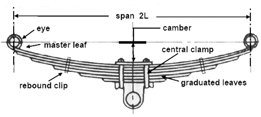 The top leaf is known as master leaf. The eye is provided for attaching the spring with another machine member. The amount of bend that is given to the spring from the central line passing through the eyes is known as camber. The camber is provided so that even at the maximum load the deflected spring should not touch the machine member to which it is attached. The central clamp is required to hold the leaves of the spring. Rebound clips help to share the load from the master leaf to the graduated leaf. Here the master leaf will be more stressed compared to other graduated leaves. The additional stress on the master leaf can be reduced by following methods.
- Master leaf is made of stronger material than the other leaves.
- Master leaf is made thinner than the other leaves. This will reduce the bending stress as evident from stress equation.
- Another common practice is to increase the radius of curvature of the master leaf than the next leaf that can measure vertical static deflection of leaf spring under static loading condition.
- L = span
- b = width of leaves
- t = thickness of leaves
- W = central load
- y = rise of crown above the level of the ends
- n = the number of leaves in the spring
 If the leaves are initially curved to circular arcs of the same radius R0, contact between the leaves will only take place at their ends and
consequently the loading of any one leaf will be as shown in the following diagram. Over the central portion both M and I are constant,
while over the end section both M and I are proportional to the distance from the end. Consequently over the whole leaf M/I is constant, but
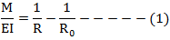
Since R0 is assumed to remain constant, the radius of curvature R in the strained case must be the same for all leaves and contact
continues to be through the ends only. Friction between the leaves is ignored and it is assumed that each leaf is free to slide over its neighbour.
And since they all maintain the same radius of curvature, they can be imagined to be arranged side by side to form a curved beam of constant depth
and varying width (as shown)
As the bending moment for the equivalent section is directly proportional to the distance from either end, and I also varies uniformly, it can be
seen that the spring is equivalent to a beam of uniform strength (i.e. the beam has the same maximum strength at all sections).
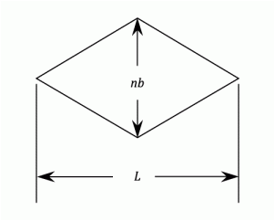
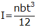
Using equations of a circle
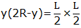
and treating y as small compared to R
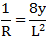
Rewriting equation (1)
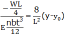
The deflection δ is given by,
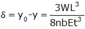
The stiffness of the spring
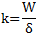
Then 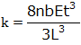
Modulus of elasticity 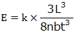
Then the theoretical proof Load is 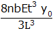
The skin stress is given by: 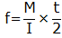
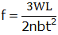
The skin stress at proof load is 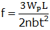
If the leaves are initially curved to circular arcs of the same radius R0, contact between the leaves will only take place at their ends and
consequently the loading of any one leaf will be as shown in the following diagram. Over the central portion both M and I are constant,
while over the end section both M and I are proportional to the distance from the end. Consequently over the whole leaf M/I is constant, but
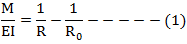
Since R0 is assumed to remain constant, the radius of curvature R in the strained case must be the same for all leaves and contact
continues to be through the ends only. Friction between the leaves is ignored and it is assumed that each leaf is free to slide over its neighbour.
And since they all maintain the same radius of curvature, they can be imagined to be arranged side by side to form a curved beam of constant depth
and varying width (as shown)
As the bending moment for the equivalent section is directly proportional to the distance from either end, and I also varies uniformly, it can be
seen that the spring is equivalent to a beam of uniform strength (i.e. the beam has the same maximum strength at all sections).
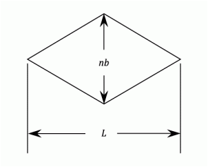
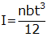
Using equations of a circle
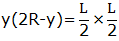
and treating y as small compared to R
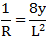
Rewriting equation (1)
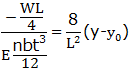
The deflection δ is given by,
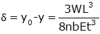
The stiffness of the spring
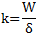
Then 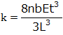
Modulus of elasticity 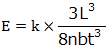
Then the theoretical proof Load is 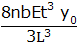
The skin stress is given by: 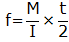
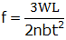
The skin stress at proof load is 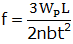

OBJECTIVE: To determine experimentally, the ultimate shear strength in double shear of mild steel plate. STEPS:
- Double click on the direct shear test on mild steel plate file , a window will open as shown below.

- Click on the NEXT button to move to the next step.

- Here the width and thickness of the mild steel plate is determined, then click on NEXT button to see the placing of the test set up.

- After placing the specimen in UTM move to next step by clicking on the NEXT button.

- Switch on the machine and apply load gradually.

- Load is applied till failure of the specimen, then click on NEXT button to check the results.

- The final results can be viewed from the tabular column as shown below.


- What type of stresses are involved in leaf springs?
- What are the important applications of leaf springs?
- Write the formula for modulus of elasticity of leaf spring?
- Define proof load in springs?
- Write formula for maximum deflection in leaf spring?